Креирано 2025-12-02 Tue 20:46, притисни ESC за мапу, Ctrl+Shift+F за претрагу, "?" за помоћ
Омогућава приступ елементима колекције секвенцијално без откривања конкретне репрезентације колекције.
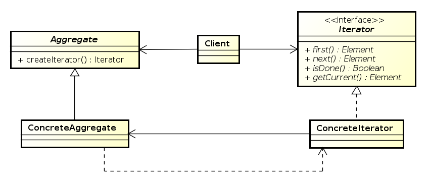
Итератор образац је директно подржан у јавиним стандардним библиотекама –
интерфејси Iterable<E> и Iterator<E>.
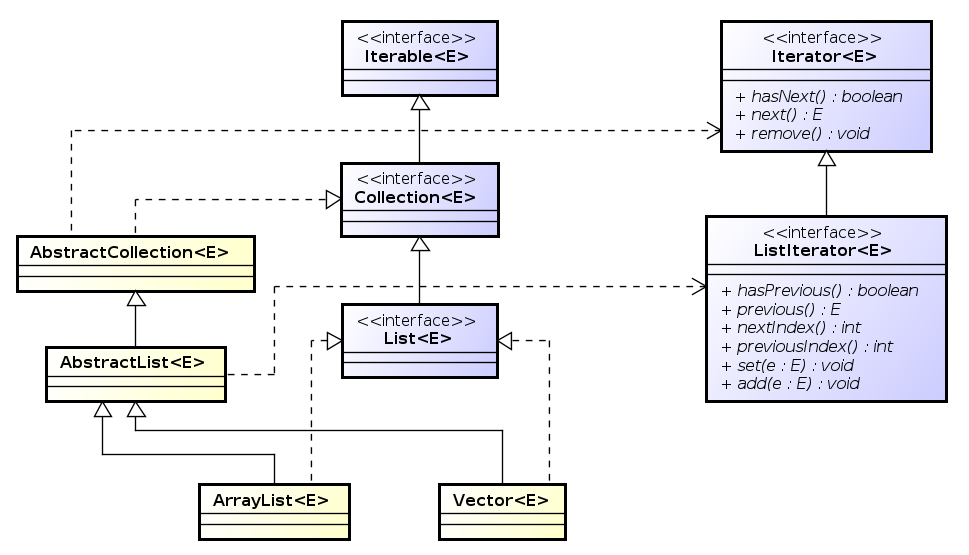
List<Integer> intList = new ArrayList<Integer>();
Iterator<Integer> i = intList.iterator();
while(i.hasNext()){
Integer a = i.next();
System.out.println(a);
}
Итератори су подржани директно у Јава програмском језику. For-each петља у јави
се може користити за било који објекат који имплементира Iterable<E> интерфејс
или за јава низове.
List<Integer> intList = new ArrayList<Integer>();
for(Integer i: intList){
System.out.println(i);
}
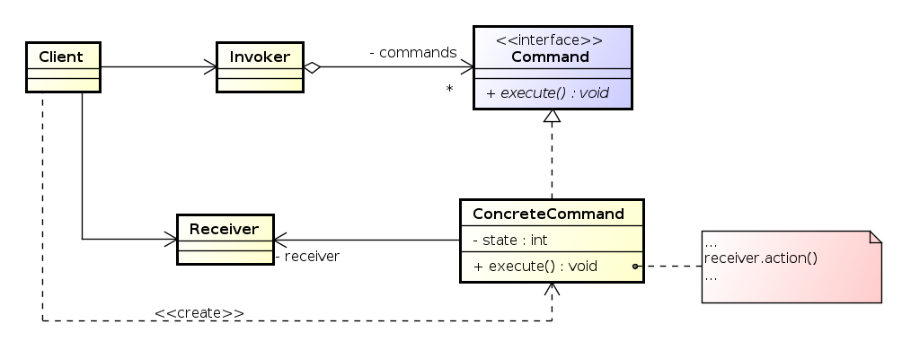
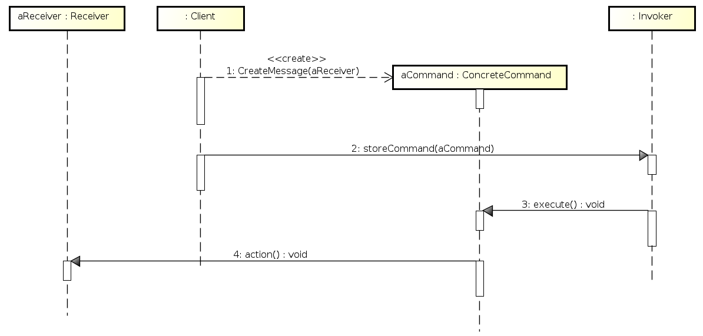
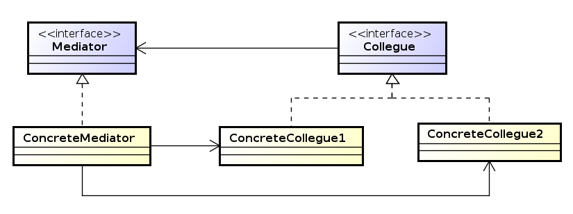
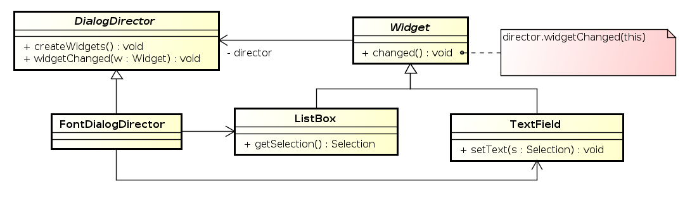
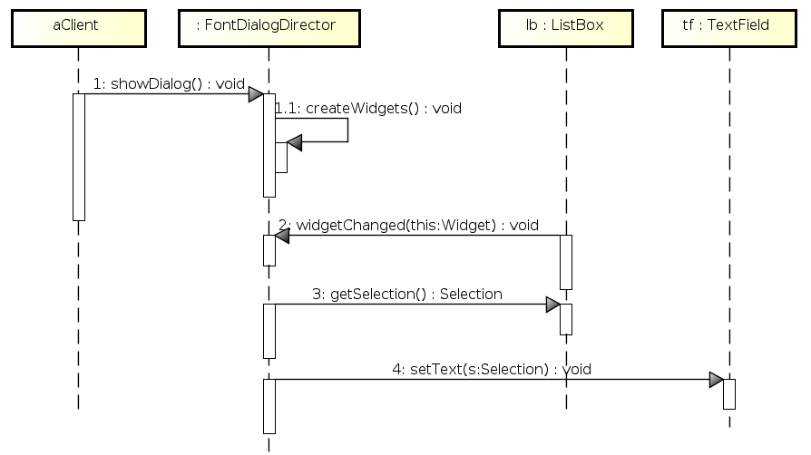
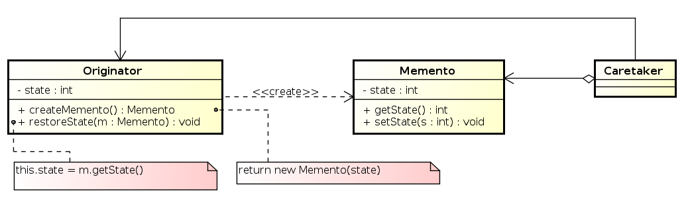
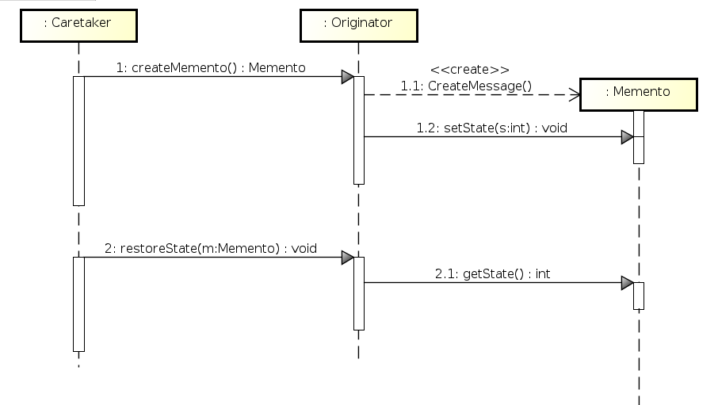
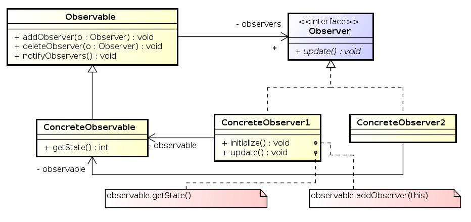
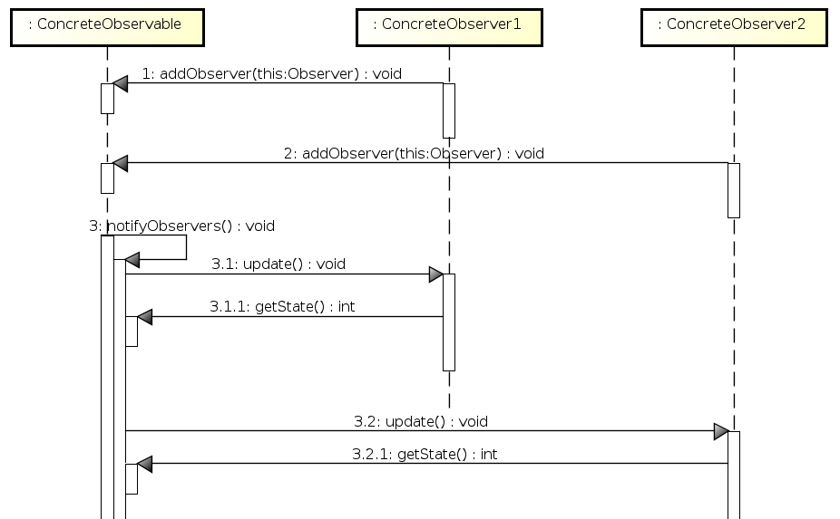
Observer и класа Observable у пакету java.util.Измена понашања објекта приликом промене његовог интерног стања. Објекат се понаша као да је променио класу.
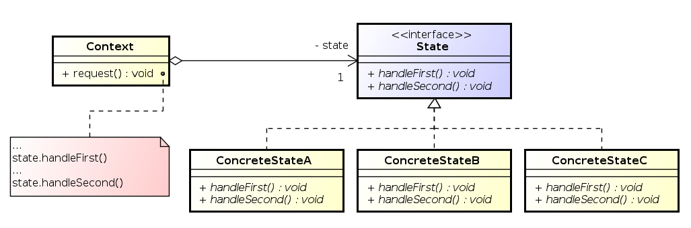
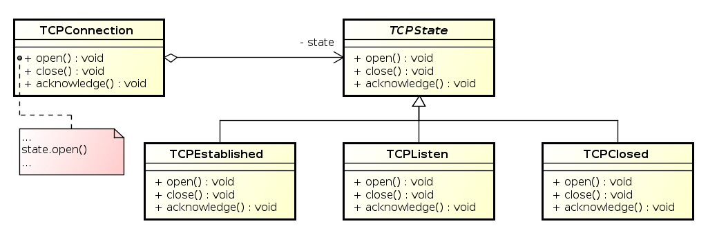
Дефинисање фамилије алгоритама и омогућавање њихове измене без утицаја на клијента.
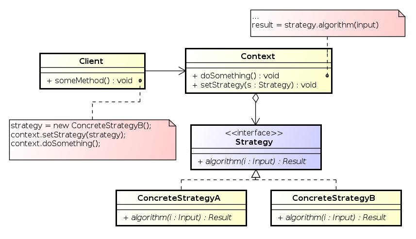
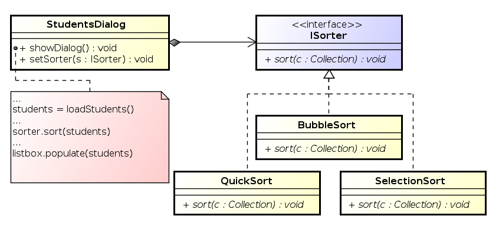
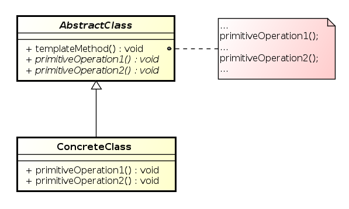
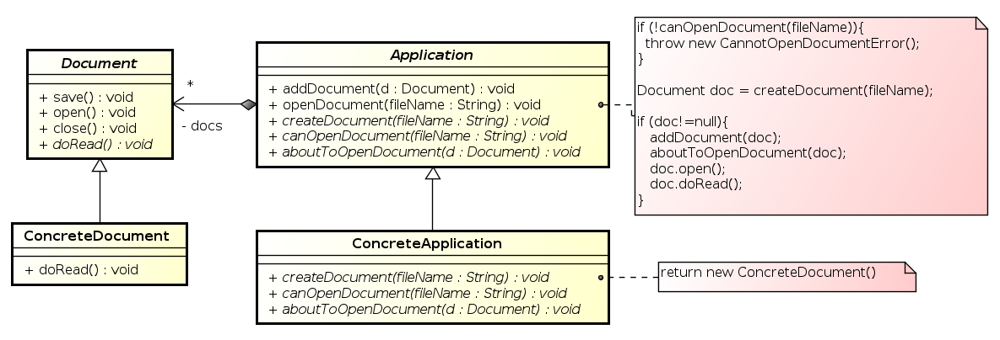
Инвертовање контроле – Hollywood principle
Don’t call us, we’ll call you
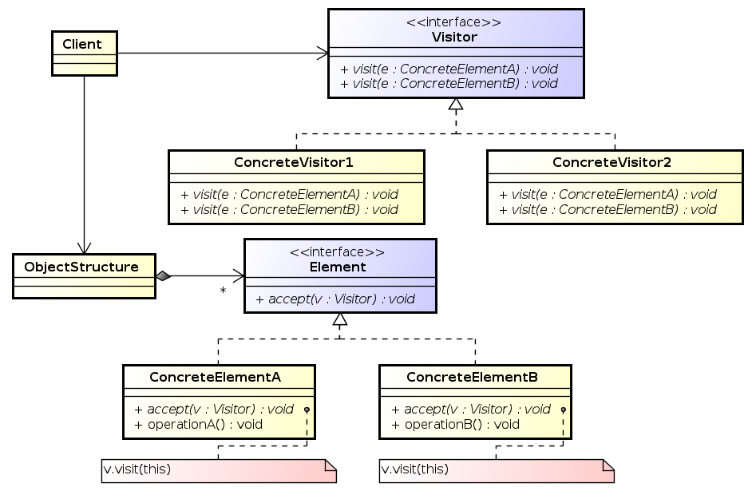
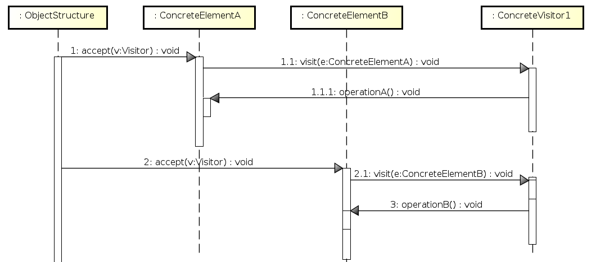
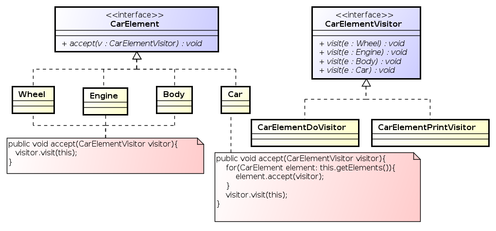
Избегавање јаког спрезања објекта који шаље захтев од објекта који врши обраду захтева тако што се објекти који врше обраду увезују у листу и даје се шанса сваком у низу да обради догађај све док неко не одговори позитивно на захтев (изврши обраду).
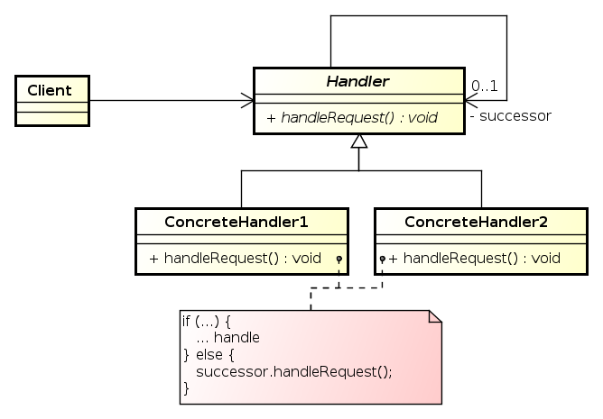
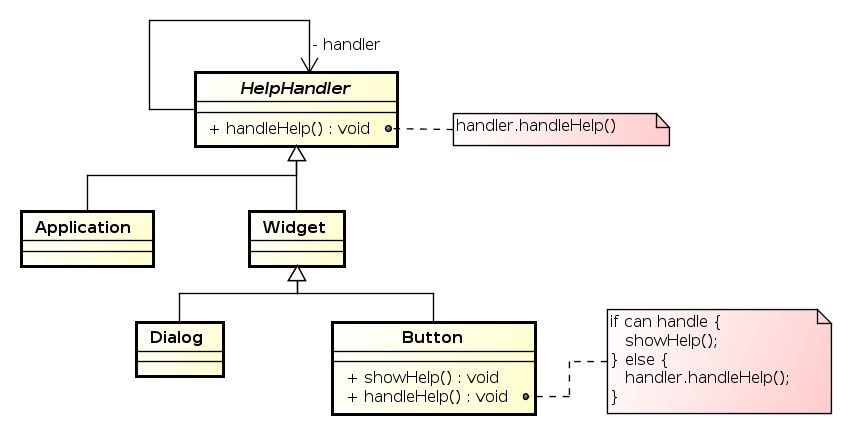